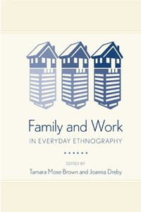

Negotiating the challenges—and fighting the myths—of parenthood and fieldwork
Negotiating the challenges—and fighting the myths—of parenthood and fieldwork


 Negotiating the challenges—and fighting the myths—of parenthood and fieldwork
Negotiating the challenges—and fighting the myths—of parenthood and fieldwork

|  |
Family and Work in Everyday Ethnographyedited by Tamara Mose Brown and Joanna Drebypaper EAN: 978-1-43991-076-4 (ISBN: 1-4399-1076-6) |
"Solidly informed by trends in postmodern ethnography, Family and Work in Everyday Ethnography illustrates how the personal affects the professional (and vice versa) as field researchers balance the task of being parents and spouses while immersing themselves in participant-observation. Along the way, these courageous editors and contributors illuminate the increasing fuzziness between work and family in society. Written in an engaging manner, this book will be of interest not only to qualitative social scientists who blur the work-family boundaries, but to anyone who struggles with maintaining a home life and a career."
—Patti Adler, University of Colorado at Boulder, and Peter Adler, Professor of Sociology and Criminology, University of Denver, co-authors of Peer Power: Preadolescent Culture and Identity
Family and Work in Everyday Ethnography exposes the intimate relationship between ethnographers as both family members and researchers. The contributors to this exciting volume question and problematize the “artificial divide” between work and family that continues to permeate writing on ethnographic field work as social scientists try to juggle research and family tensions while “on the job.”
Essays relate experiences that mirror work-family dilemmas that all employed parents face, and show how personal experiences deeply affect social scientists’ home life and their studies. Bringing together voices of various family members—pregnant women, mothers, fathers, and children—Family and Work in Everyday Ethnography demonstrates how the mixture of work and family in this particular occupation has raised questions—both practical and theoretical—that relate to race, class, and gender.
Contributors include: Chris Bobel, Erynn Masi de Casanova, Randol Contreras, C. Aiden Downey, Tanya Golash-Boza, Steven Gold, Sherri Grasmuck, Barbara Katz Rothman, Jennifer Reich, Leah Schmalzbauer, Gregory Smithsimon, and the editors.
Excerpt available at www.temple.edu/tempress
"What happens when the divide between professional pursuits and personal life dissolves? Addressing this central question in qualitative research, these moving essays provide a roadmap for negotiating the tensions between field research and family life. These brave researchers make it clear that the best ethnography calls on us to integrate—and not just traverse the boundaries that separate—home and work. Family and Work in Everyday Ethnography provides a fascinating behind-the-scenes look at the strategies that help ethnographers use their personal experiences to become better researchers and use their research to become more insightful family members. Bravo!"
—Kathleen Gerson, Collegiate Professor of Sociology, New York University, and author of The Unfinished Revolution: Coming of Age in a New Era of Gender, Work, and Family
"Even though the stories presented in this book revolve around ethnographic research, quantitative and qualitative researchers alike will be able to relate to the discussion of work and family balance. Covering issues from the visibility of the pregnant body when in the field, to bringing children to your study, to how a researcher copes with continuing their research in the face of tragedy, this book will keep the reader engaged through its narratives and reflections on the topic of balancing work and family in research.... Researchers across disciplines and methods in the social sciences will find this book an interesting reflection on their own work and family balance in their research."
—
Contemporary Sociology
"This edited collection poses several questions for and about the practice of ethnography for the study of families and work.... A useful text for collections on qualitative research methods or sociology of family. Summing Up: Recommended."
—Choice
"In Family and Work in Everyday Ethnography, editors Tamara Mose Brown and Joanna Dreby have put forward a collection of essays that describe how having a family influences ethnographic data collection and interpretation…. The authors overwhelmingly argue their children enhanced their work…. Two essays stand out and are essential for turning this collection into an important contribution to the methodological literature about immersion in the field…. Yet, this volume tries to be more than just a cautious reminder about the malleability and contingency of ethnographic data. The editors also strive to put the issue of family and work balance in the forefront and to question the feasibility of drawing boundaries between work and family life."
—American Journal of Sociology
"Taken as a whole, this collected volume shows that ethnographic fieldwork demands practical, intellectual, and emotional plasticity; it means living a number of 'selves' and viewing the world through multiple perspectives. But far from treating this as something to be edited out of ethnographic accounts, Family and Work in Everyday Ethnography argues that acknowledgement and rigorous reflection upon identity, perspective, emotions, uncomfortable interactions and tensions, is, in fact, vital."
—Ethnography
Acknowledgments
Part I: Parenting and Fieldwork: Introduction
1. Work and Home (Im)Balance: Finding Synergy through Ethnographic Fieldwork • Joanna Dreby and Tamara Mose Brown
2. Theorizing the Field: Beyond Blurred Boundaries and into the Thick of Thing • Barbara Katz Rothman
Part II: Experiences of the Expecting
3. Sociological Pregnancy: On Gestating Research, Writing, and Offspring • Erynn Masi de Casanova
4. Emerging Breasts, Bellies, and Bodies of Knowledge: How Pregnancy and Breastfeeding Matter in Fieldwork • Jennifer A. Reich
Part III: Managing Mothers
5. The Intimate Ties between Work and Home • Joanna Dreby
6. Motherhood and Transformation in the Field: Reflections on Positionality, Meaning, and Trust • Leah Schmalzbauer
7. Parents and Children, Research and Family, Life and Loss: Living the Questions of Doing Ethnography • Chris Bobel
Part IV: Tentative Fathering
8. Passing as a Parent: Playground Fieldwork in the Shadow of the World Trade Center • Gregory Smithsimon
9. Making Up for Lost Time: My Son, My Fieldwork, My Life • Randol Contreras
10. Kids Change Everything: How Becoming a Dad Transformed My Fieldwork (and Findings) • Charles Aiden Downyl
Part V: Challenging Children
11. Fourteen Months, Four Countries, and Three Kids: Tales from the Field • Tanya Golash-Boza with Raymi Boza,
Soraya Boza, and Tatiana Boza
12. Reflections on Ethnographic Childhoods • Steven J. Gold
13. “Just Don’t Take Notes at Any of My Games or Do Anything Weird”: Ethnography and Mothering across Adolescence • Sherri Grasmuck
Contributors
Index
Tamara Mose Brown is Assistant Professor of Sociology and Program Director of Caribbean Studies at Brooklyn College, City University of New York. She is author of Raising Brooklyn: Nannies, Childcare, and Caribbeans Creating Community.
Joanna Dreby is Assistant Professor of Sociology at the University at Albany, State University of New York. She is author of Divided by Borders: Mexican Migrants and their Children.
Sociology
Family Policy
Anthropology
© 2016 Temple University. All Rights Reserved. This page: http://www.temple.edu/tempress/titles/2293_reg.html.